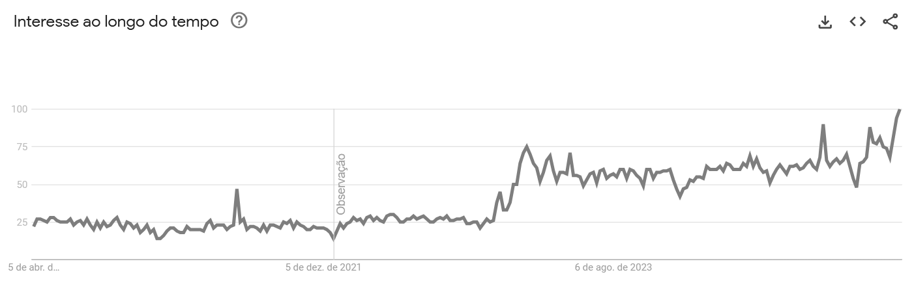
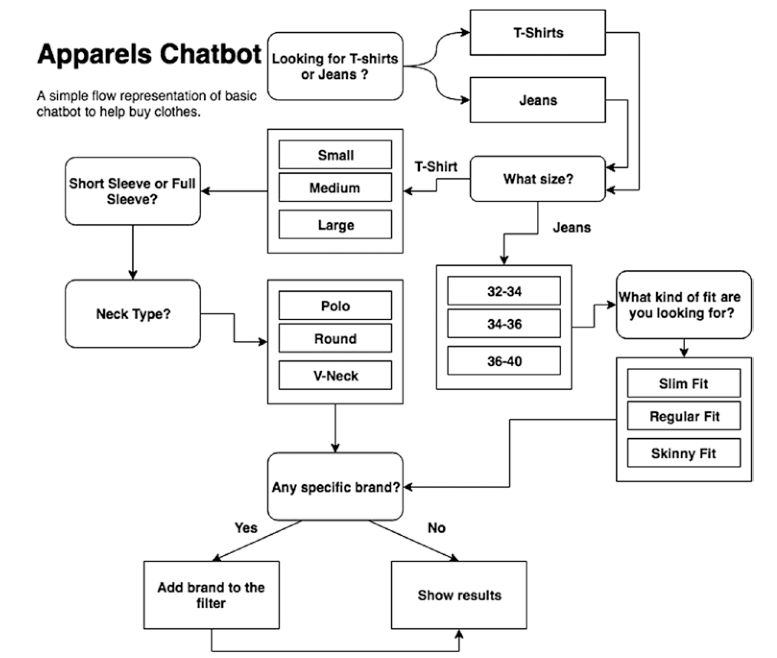

1 Introdução
“Podemos ver apenas uma curta distância à frente, mas pode-se ver muito que precisa ser feito.”
Alan Turing
Objetivo Apresentar os conceitos fundamentais de chatbots, sua classificação, histórico e principais abordagens, preparando o leitor para compreender a evolução dessas tecnologias.
1.1 Contexto
Para uma parcela da população um chatbot, estilo ChatGPT, é ferramenta essencial para executar tarefas, redigir e-mails e traduzir textos. O que um dia causou espanto e admiração hoje se converteu em dependência. Neste contexto, um chatbot é um programa de computador que simula uma conversa humana, via texto ou áudio, oferecendo respostas diretas a perguntas e apoiando diversas atividades, desde conversas gerais até ações específicas, como abrir uma conta bancária ou agendar um voo para o show do seu cantor preferido.
Para entender como chegamos a esse ponto, vale recordar a trajetória do próprio conceito. Embora o programa ELIZA, criado por @Weizenbaum1996, seja frequentemente citado como um dos primeiros exemplos de software conversacional, o termo “chatbot” ainda não era empregado à época. Sua origem remete a “chatterbot” — sinônimo de “chatbot” —, popularizado por Michael Mauldin em 1994 ao descrever seu programa JULIA [@Mauldin1994]. Anos depois, outras publicações acadêmicas, como os anais da Virtual Worlds and Simulation Conference de 1998 [@Jacobstein1998], contribuíram para consolidar os termos entre os pesquisadores.
O chatbot ELIZA representou um experimento marcante na interação entre humano e computador [@Weizenbaum1996]. Seu roteiro (ou script) mais famoso, o DOCTOR, imitava rudimentarmente um psicoterapeuta, utilizando correspondência de padrões simples. Por exemplo, quando um usuário inseria a frase “Estou triste” no ELIZA, o programa respondia “Por que você está triste hoje?”, reformulando a entrada do usuário como uma pergunta. O funcionamento básico do sistema baseava-se em um conjunto restrito de regras e substituições, o que lhe permitia apenas uma compreensão superficial e limitada da linguagem humana.
O roteiro DOCTOR do ELIZA adequou-se bem a um tipo de diálogo mais simples, pois suas respostas dependiam de pouco conhecimento sobre o ambiente externo. As regras no roteiro permitiam que o programa respondesse ao usuário com outras perguntas ou simplesmente refletisse a afirmação original.
NOTA
Uma descrição detalhada do funcionamento do ELIZA e o roteiro DOCTOR, com exemplos em Python, será apresentada no Capítulo 2.
Outro chatbot famoso é o ChatGPT da OpenAI. Ele é um programa capaz de gerar texto muito semelhante ao criado por humanos. Ele utiliza redes neurais, com aprendizagem profunda, para gerar sentenças e parágrafos com base nas entradas e informações fornecidas. Entre suas capacidades, ele pode traduzir e resumir textos, responder a perguntas e explicar conceitos. Contudo, o ChatGPT não possui consciência nem a capacidade de compreender contexto ou emoções.
O chatGPT é um exemplo de Modelo de Linguagem Grande (em inglês Large Language Model - LLM), baseado na arquitetura Transformers, introduzida em 2017 [@vaswani2017attention]. Modelos deste tipo são treinados com terabytes de texto, utilizando mecanismos de autoatenção que avaliam a relevância de cada palavra em uma frase. Ao contrário das regras manuais do ELIZA, os LLMs extraem padrões linguísticos a partir da vasta quantidade de dados com que a rede neural foi treinada.
Esses dois chatbots, ELIZA e ChatGPT, são bons representantes do tipo de chatbot conversacional. Apesar de terem surgido com décadas de diferença — ELIZA em 1966 e ChatGPT em 2022 — e de diferirem bastante na forma como geram suas respostas, ambos compartilham semelhanças em seu objetivo: conversar sobre determinado assunto ou responder perguntas, mantendo o usuário em um diálogo fluido quando necessário. Chatbots com essas características podem ser agrupados, de acordo com o objetivo, como chatbots conversacionais e são utilizados para interagir sobre assuntos gerais.
Outro tipo de chatbot classificado em relação ao objetivo é o chatbot orientado a tarefas. Os chatbots orientados a tarefas executam ações específicas, como abrir uma conta bancária ou pedir uma pizza. Geralmente, as empresas disponibilizam chatbots orientados a tarefas para seus usuários, com regras de negócio embutidas na conversação e com fluxos bem definidos. Normalmente, não se espera pedir uma pizza e, no mesmo chatbot, discutir os estudos sobre Ética do filósofo Immanuel Kant (embora talvez haja quem queira).
Essas duas classificações, “conversacional” e “orientado a tarefas”, ainda não são suficientes para uma completa classificação. Existem outras classificações que serão discutidas em seções posteriores. Além disso, uma abordagem híbrida, unindo funções de chatbots do tipo “conversacional” e “orientado a tarefas” vem sendo utilizada para atender às necessidades dos usuários.
A popularidade dos chatbots tem crescido significativamente em diversos domínios de aplicação [@B2020; @Klopfenstein2017; @Sharma2020]. Essa tendência é corroborada pelo aumento do interesse de busca pelo termo “chatbots”, conforme análise de dados do Google Trends no período entre 2020 e 2025 (Figura 1.1). Nesta figura, os valores representam o interesse relativo de busca ao longo do tempo, onde 100 indica o pico de popularidade no período analisado e 0 (ou a ausência de dados) indica interesse mínimo ou dados insuficientes.

Fonte: Google Trends acesso em 05/04/2025
1.2 Agentes
Os termos “chatbots” e “agentes” são usadas indiscriminadamente, o que pode causar confusão. Vamos a uma definição mais precisa. Um chatbot é um programa computacional projetado para interagir com usuários por meio de linguagem natural. Por outro lado, o conceito de agente possui uma definição mais ampla. Um agente trata-se de uma entidade computacional que percebe seu ambiente por meio de sensores e atua sobre esse ambiente por meio de atuadores.
Nesse contexto, um chatbot (Figura 1.3) pode ser considerado uma instanciação específica de um agente - veja na Figura 1.2 a arquitetura conceitual de alto nível para um agente - cujo propósito primário é a interação conversacional em linguagem natural.

Fonte: Adaptado de (Russel and Norving 2013)

Com o advento de modelos de linguagem, como os baseados na arquitetura Generative Pretrained Transformer (GPT), a exemplo do ChatGPT, observou-se uma recontextualização do termo “agente” no domínio dos sistemas conversacionais. Nessa abordagem mais recente, um sistema focado predominantemente na geração de texto conversacional tende a ser denominado “chatbot”. Em contraste, o termo “agente” é frequentemente reservado para sistemas que, além da capacidade conversacional, integram e utilizam ferramentas externas (por exemplo, acesso à Internet, execução de código e interação com APIs) para realizar tarefas complexas e interagir proativamente com o ambiente digital. Um sistema capaz de realizar uma compra online, processar um pagamento e confirmar um endereço de entrega por meio do navegador do usuário seria, portanto, classificado como um agente, diferentemente de chatbots mais simples como ELIZA, ou mesmo versões mais simples do chatGPT (GPT-2), cujo foco era estritamente o diálogo.
1.3 Fluxo Conversacional
Um chatbot responde a uma entrada do usuário. Porém, essa interação textual mediada por chatbots não se constitui em uma mera justaposição aleatória de turnos de conversação ou pares isolados de estímulo-resposta. Pelo contrário, espera-se que a conversação exiba coerência e mantenha relações lógicas e semânticas entre os turnos consecutivos. O estudo da estrutura e organização da conversa humana é abordado por disciplinas como a Análise da Conversação.
No contexto da análise da conversação em língua portuguesa, os trabalhos de Marcuschi [@Marchuschi1986] são relevantes ao investigar a organização dessa conversação. Marcuschi analisou a estrutura conversacional em termos de unidades coesas, como o “tópico conversacional”, que agrupa turnos relacionados a um mesmo assunto ou propósito interacional.
Conceitos oriundos da Análise da Conversação, como a gestão de tópicos, têm sido aplicados no desenvolvimento de chatbots para aprimorar sua capacidade de manter diálogos coerentes e contextualmente relevantes com usuários humanos [@Neves2005].
Na prática de desenvolvimento de sistemas conversacionais, a estrutura lógica e sequencial da interação é frequentemente modelada e referida como “fluxo de conversação” ou “fluxo de diálogo”. Contudo, é importante ressaltar que a implementação explícita de modelos sofisticados de gerenciamento de diálogo, inspirados na Análise da Conversação, não é uma característica universal de todos os chatbots, variando conforme a complexidade e o propósito do sistema.
Um exemplo esquemático de um fluxo conversacional é apresentado na Figura 1.4. Nesta figura, o fluxo de conversação inicia quando o usuário entra com o texto: I WANT PIZZA, o chatbot responde com uma pergunta: HI I AM THE PIZZA BOT. CAN I CONFIRM THIS DELIVERY TO YOUR HOUSE? O usuário então pode responder: YES, e o chatbot finaliza a conversa com: IT’S ON THE WAY. THANK YOU FOR CHOOSE OUR PRODUCT. Caso o usuário responda: NO, o chatbot responde com a pergunta original: HI I AM THE PIZZA BOT. CAN I CONFIRM THIS DELIVERY TO YOUR HOUSE? O fluxo de conversação continua até que o usuário responda com um “YES” para a pergunta inicial. Essa estrutura de perguntas e respostas é comum em chatbots orientados a tarefas, onde o objetivo é guiar o usuário por um processo específico, tal como fazer um pedido de pizza.

Um outro tipo de fluxo para um chatbot que vende roupas online está representado na Figura 1.5.

Retirado de (Raj 2019).
1.4 Histórico
Um marco significativo na evolução dos chatbots depois do ELIZA foi o ALICE, que introduziu a Artificial Intelligence Markup Language (AIML), uma linguagem de marcação baseada em XML [@Wallace2000]. A AIML estabeleceu um paradigma para a construção de agentes conversacionais ao empregar algoritmos de correspondência de padrões. Essa abordagem utiliza modelos pré-definidos para mapear as entradas do usuário a respostas correspondentes, permitindo a definição modular de blocos de conhecimento [@Wallace2000].
No contexto brasileiro, um dos primeiros chatbots documentados capaz de interagir em português, inspirado no modelo ELIZA, foi o Cybele [@primo2001chatterbot]. Posteriormente, foi desenvolvido o Elecktra, também em língua portuguesa, com aplicação voltada para a educação a distância [@Leonhardt2003]. Em 2019, o processo de inscrição para o Exame Nacional do Ensino Médio (ENEM) foi disponibilizado por meio de uma interface conversacional baseada em chatbot (Figura 1.6).

O desenvolvimento de chatbots tem atraído investimentos de grandes corporações. Notavelmente, a IBM desenvolveu um sistema de resposta a perguntas em domínio aberto utilizando sua plataforma Watson [@Ferrucci2012]. Esse tipo de tarefa representa um desafio computacional e de inteligência artificial (IA) considerável. Em 2011, o sistema baseado em Watson demonstrou sua capacidade ao competir e vencer competidores humanos no programa de perguntas e respostas JEOPARDY! [@Ferrucci2012].
Diversos outros chatbots foram desenvolvidos para atender a demandas específicas em variados domínios. Exemplos incluem: BUTI, um companheiro virtual com computação afetiva para auxiliar na manutenção da saúde cardiovascular [@Junior2008]; EduBot, um agente conversacional projetado para a criação e desenvolvimento de ontologias com lógica de descrição [@Lima2017]; PMKLE, um ambiente inteligente de aprendizado focado na educação em gerenciamento de projetos [@Torreao2005]; RENAN, um sistema de diálogo inteligente fundamentado em lógica de descrição [@AZEVEDO2015]; e MOrFEu, voltado para a mediação de atividades cooperativas em ambientes inteligentes na Web [@Bada2012].
Entre os chatbots baseados em LLMs de destaque atualmente estão o Qwen https://chat.qwen.ai/, desenvolvido pela Alibaba, que se destaca por sua eficiência e suporte multilíngue; o DeepSeek https://chat.deepseek.com/, de código aberto voltado para pesquisa e aplicações empresariais com foco em precisão e escalabilidade; o Maritaca https://chat.maritaca.ai/, modelo brasileiro otimizado para o português; o Gemini https://gemini.google.com/, da Google, que integra capacidades multimodais e forte desempenho em tarefas diversas; o Mistralhttps://chat.mistral.ai/, da Mistral AI, que utiliza arquitetura de mistura de especialistas para maior eficiência; o Llama https://www.meta.ai/, da Meta, reconhecido por ser código aberto e ampla adoção na comunidade; o Claude https://claude.ai/, da Anthropic, projetado com ênfase em segurança e alinhamento ético, que vem ganhando adeptos para tarefas e codificação; e o Nemotron https://build.nvidia.com/models, da NVIDIA, que oferece modelos de linguagem otimizados para execução em GPUs e aplicações empresariais de alto desempenho. E o Groq https://grok.com/ da xAI.
1.5 Abordagens
Desde o pioneirismo do ELIZA, múltiplas abordagens e técnicas foram exploradas para o desenvolvimento de chatbots. Entre as mais relevantes, destacam-se: AIML com correspondência de padrões (pattern matching), análise sintática (Parsing), modelos de cadeia de Markov (Markov Chain Models), uso de ontologias, redes neurais recorrentes (RNNs), redes de memória de longo prazo (LSTMs), modelos neurais sequência-a-sequência (Sequence-to-Sequence), aprendizado adversarial para geração de diálogo, além de abordagens baseadas em recuperação (Retrieval-Based) e generativas (Generative-Based) [@borah2018survey; @Ramesh2019; @Shaikh2016; @Abdul-Kader2015; @Li2018], entre outras.
A seguir, uma lista resumida das tecnologias e marcos da criação dos chatbots:
ELIZA: o primeiro chatbot, que utilizava correspondência de padrões simples para simular um psicoterapeuta. Foi um marco na história dos chatbots e influenciou o desenvolvimento de sistemas conversacionais subsequentes [@Weizenbaum1996].
AIML: Artificial Intelligence Markup Language, uma linguagem de marcação baseada em XML que deu origem ao ALICE [@Wallace2000]. Essa linguagem de marcação permite a definição de regras de correspondência de padrões (pattern matching) para mapear entradas do usuário a respostas predefinidas.
Transformers: arquitetura de rede neural baseada em atenção, que revolucionou o processamento de linguagem natural (NLP) [@vaswani2017attention]. Modelos como BERT e GPT são exemplos de arquiteturas baseadas em Transformer que têm sido amplamente utilizadas em chatbots modernos.
Além disso, diversos frameworks têm sido desenvolvidos para facilitar a criação desses agentes complexos, como CrewAI [@crewai2025] e Mangaba.AI [@mangabaAI2025] e plataformas diversas como Hugging Face (e.g., Transformers Agents), que fornecem abstrações e ferramentas em Python para orquestrar múltiplos componentes e o uso de ferramentas externas.
1.6 Chatbot pensa?
Apesar do progresso recente de chatbots, o mecanismo fundamental da inteligência em nível humano, frequentemente refletido na comunicação, ainda não está totalmente esclarecido [@Shum2018]. Para avançar na solução desses desafios, serão necessários progressos em diversas áreas da IA cognitiva, tais como: modelagem empática de conversas, modelagem de conhecimento e memória, inteligência de máquina interpretável e controlável, e calibração de recompensas emocionais [@Shum2018].
Uma das dificuldades na construção de chatbots do tipo orientado a tarefas - a exemplo do Artificial Intelligence Markup Language (AIML) usado no ALICE - reside em gerenciar a complexidade das estruturas condicionais (“se-então”) que definem o fluxo do diálogo [@Raj2019]. Quanto maior o número de decisões a serem tomadas, mais complexas tendem a ser essas estruturas condicionais. Contudo, elas são essenciais para codificar fluxos de conversação complexos. Se a tarefa que o chatbot visa simular é inerentemente complexa e envolve múltiplas condições, o código precisará refletir essa complexidade. Para facilitar a visualização desses fluxos, uma solução eficaz é a utilização de fluxogramas. Embora simples de criar e entender, os fluxogramas constituem uma ferramenta visual de representação para este problema.
NOTA
Uma explicação detalhada do AIML será apresentada no Capítulo 2.
Os chatbots baseados em AIML apresentam desvantagens específicas. Por exemplo, o conhecimento é representado como instâncias de arquivos AIML. Se esse conhecimento for criado com base em dados coletados da Internet, ele não será atualizado automaticamente, exigindo atualizações periódicas manuais [@Madhumitha2015]. No entanto, já existem abordagens para mitigar essa limitação, permitindo carregar conteúdo AIML a partir de fontes como arquivos XML [@Macedo2014], um corpus textual [@DeGasperis2013] ou dados do Twitter [@Yamaguchi2018]. Além de abordagens no-code que geram o AIML a partir de fluxogramas [@neo2023BPMN].
Outra desvantagem do AIML, a exemplo do Eliza, reside na relativa complexidade de seus padrões de correspondência (patterns). Além disso, a manutenção do sistema pode ser árdua, pois, embora a inserção de conteúdo (categorias) seja conceitualmente simples, grandes volumes de informação frequentemente precisam ser adicionados manualmente [@Madhumitha2015].
Especificamente no caso do AIML, a construção e a visualização de fluxos de diálogo complexos enfrentam dificuldades adicionais. Devido ao seu formato baseado em texto, muitas vezes é difícil perceber claramente como as diferentes categorias (unidades de conhecimento e resposta) se interligam para formar a estrutura da conversação.
O interesse pelos chatbots continua crescendo. No entanto, eles podem ser complicados para se construir e os usuários nem sempre têm experiência suficiente para configurá-los. Alguns usuários não têm necessariamente habilidades de programação ou de TI avançadas. Para que eles possam criar e personalizar os chatbots, é importante que a autoria seja fácil de usar e intuitiva. Ela não deve exigir conhecimento de linguagens de computador que sejam difíceis de entender para o público em geral. Para resolver esses problemas, várias ferramentas de autoria já foram propostas e podem ser utilizadas por usuários sem o uso de código, ferramentas no-code [@Neo2023Chatcreator].
Mesmo um chatbot baseado em LLM também não “pensa” no sentido cognitivo humano, mas opera a partir de um mecanismo estatístico de predição de tokens condicionado a um contexto. Sua forma de funcionamento é sustentada por arquiteturas neurais profundas, treinadas sobre grandes volumes de dados textuais, que capturam regularidades linguísticas, semânticas e pragmáticas. Assim, a resposta gerada resulta da estimativa da sequência de palavras mais provável dado um histórico de entrada, e não de um processo deliberativo consciente.
A aparente coerência e racionalidade observadas nas respostas decorrem da capacidade do modelo em representar padrões complexos da linguagem natural em espaços vetoriais de alta dimensão. Esses modelos internalizam relações sintáticas, semânticas e discursivas, permitindo generalização para contextos não vistos durante o treinamento. Dessa forma, o chatbot consegue simular comportamentos como argumentação, explicação e síntese, ainda que tais comportamentos sejam emergentes do ajuste estatístico e não de compreensão genuína.
A justificativa para esse modo de “pensar” reside na eficácia prática do paradigma. Ao invés de regras explícitas ou sistemas simbólicos rígidos, os LLMs oferecem flexibilidade, escalabilidade e adaptação a múltiplos domínios, o que os torna adequados para tarefas complexas de interação homem-máquina. A combinação de aprendizado profundo, atenção contextual e grandes corpora textuais permite ao chatbot responder de forma contextualizada, mantendo consistência local e global no discurso.
Por fim, é fundamental reconhecer as limitações inerentes a esse modelo de funcionamento. A ausência de intencionalidade, consciência e compreensão semântica profunda implica que o chatbot pode produzir respostas plausíveis, porém factualmente incorretas ou logicamente inconsistentes. Assim, a forma de “pensar” de um chatbot baseado em LLM deve ser entendida como um mecanismo probabilístico avançado de geração de linguagem, útil e poderoso, mas distinto do raciocínio humano.
1.7 Exercícios
Qual é o objetivo principal de um chatbot?
Substituir completamente os seres humanos no atendimento ao cliente.
Simular uma conversa humana para resolver problemas ou fornecer informações.
Gerar textos literários complexos.
Armazenar grandes quantidades de dados em tempo real.
Qual das seguintes opções descreve corretamente um benefício dos chatbots?
Eles nunca precisam ser atualizados.
Eles podem operar 24 horas por dia, 7 dias por semana, sem intervenção humana.
Eles sempre tomam decisões melhores do que humanos.
Eles substituem completamente a necessidade de suporte técnico.
Qual das opções a seguir é uma técnica comum usada por chatbots para entender o que o usuário está perguntando?
Mineração de Dados
Tokenização
Compressão de Dados
Balanceamento de Carga
Qual é o papel dos embeddings de palavras em chatbots?
Converter palavras em vetores numéricos que capturam o significado semântico.
Armazenar grandes quantidades de dados de conversação.
Executar algoritmos de compressão de texto.
Facilitar a tradução de texto entre diferentes idiomas.
Qual é a principal limitação dos chatbots baseados em regras?
Eles não conseguem operar em tempo real.
Eles exigem grandes quantidades de dados para funcionar.
Eles só podem responder a consultas específicas para as quais foram
programados.
Eles são incapazes de realizar tarefas repetitivas.